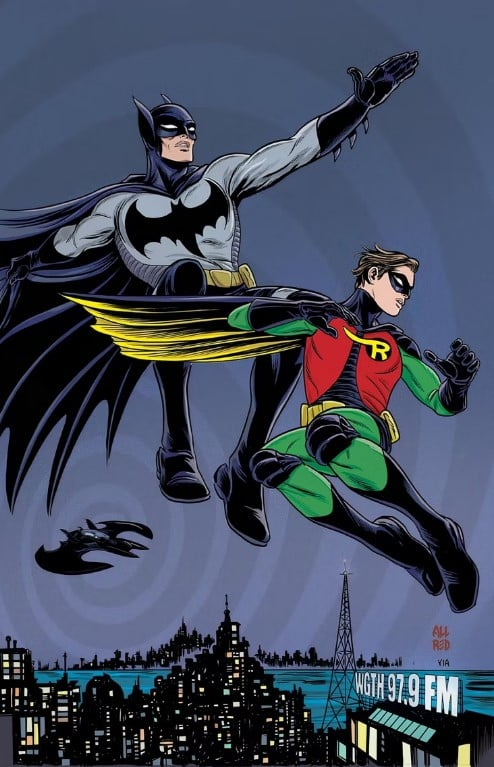
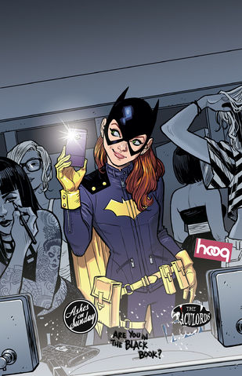
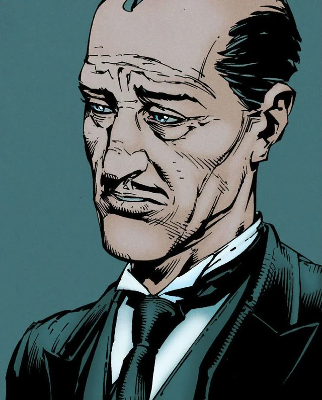
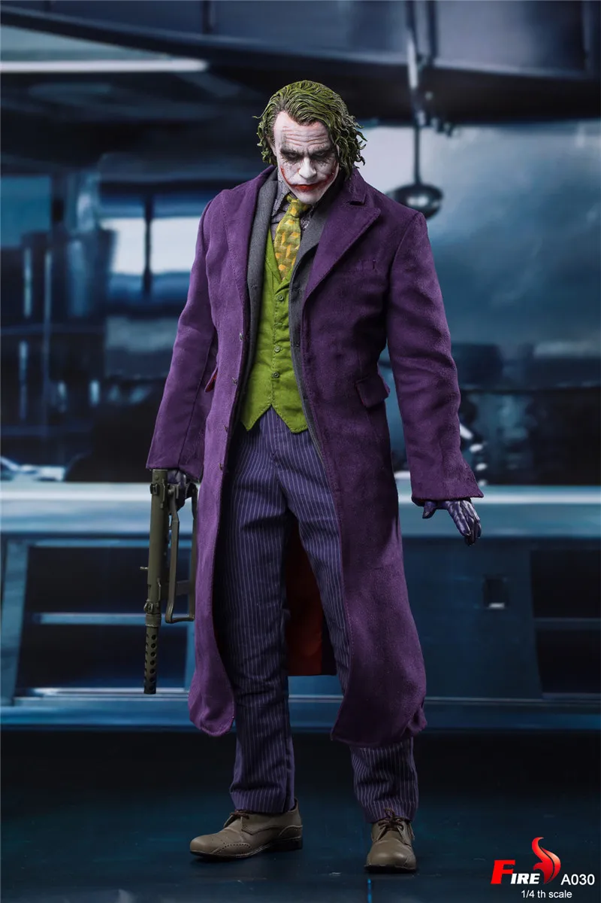
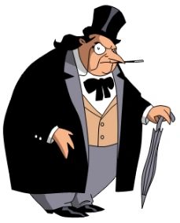
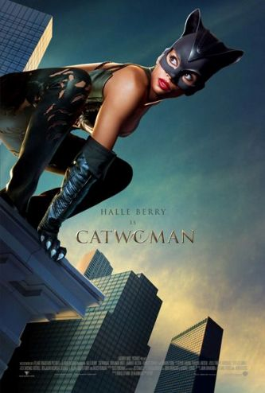
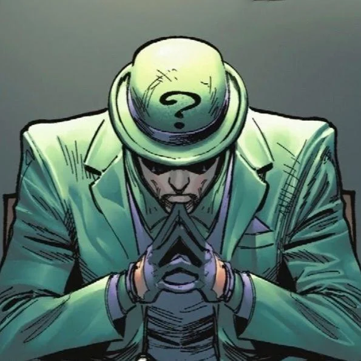

Batman ( lit. "Homem-morcego") é uma personagem fictícia e super-herói da editora norte-americana DC Comics, criado pelo escritor Bill Finger a partir dos esboços do desenhista Bob Kane, aparecendo pela primeira vez na revista Detective Comics #27 (maio de 1939) com o nome "Bat-Man".
Ao contrário da maioria dos super-heróis, Batman não tem superpoderes; assim, na sua guerra contra o crime, utiliza seu intelecto de gênio, sua perícia em artes marciais e sua destreza física — bem como sua riqueza, que lhe garante um arsenal de última geração.
Enquanto Bruce Wayne é daesprme ajuda eocupado e irresponsável, Batman é frio, determinado e implacável. Além do uniforme e da personalidade, Bruce Wayne também altera sua voz significativamente quando torna-se Batman, tanto para disfarçar como para intimidar.
Superman ou Super-Homem é um super-herói de histórias em quadrinhos publicadas pela DC Comics. O personagem, entretanto, desde os anos 1930 já foi adaptado para diversos outros meios, como cinema, rádio, televisão, literatura e videogame.
Aliados
Robin
Batgirl
Alfred
Super Homem

Vilões
Coringa
Pinguim
Mulher-Gato
Charada
Coringa foi retratado como um homem lunático que matava as pessoas com soro que as deixavam com um sorriso fixo no rosto. O visual icônico foi baseado no personagem Gwynplaine, do filme O Homem que Ri. A primeira história do Coringa que abordou sua origem veio em 1951.
Pinguim se comporta como um cavalheiro e também como um pinguim e sempre tem inveja de outros magnatas, pois considera que são mais ricos do que ele. Ele sempre usa pássaros para cometer crimes e seus crimes são baseados em superfaturamento ilícito. Pinguim sempre se irrita quando Batman interfere em seus planos.
A Mulher-Gato foi criada no ano de 1940 para ser o interesse amoroso do Batman. Mas diferente de outras personagens que faziam par romântico com algum herói, os criadores queriam uma personagem ambígua, traiçoeira e que pudesse conquistar leitores de ambos os sexos.